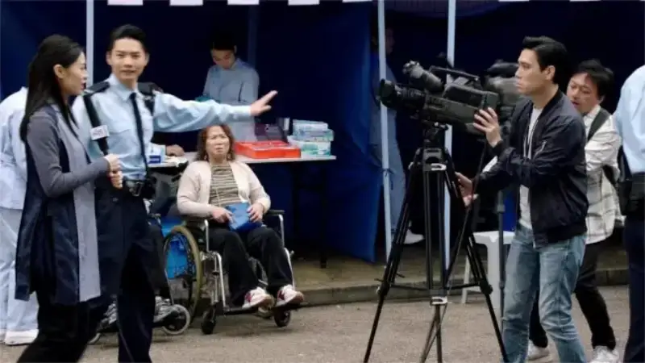
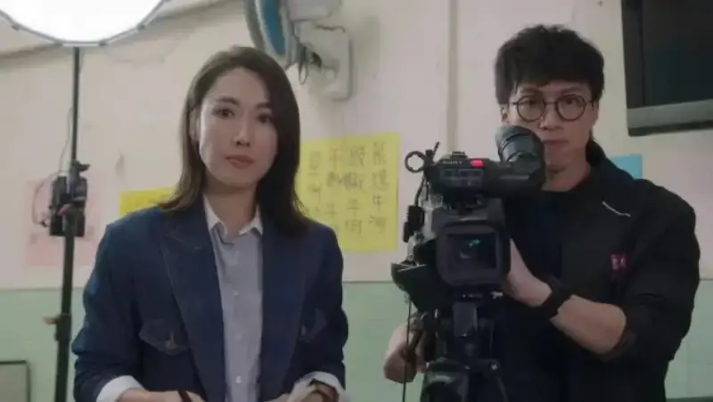
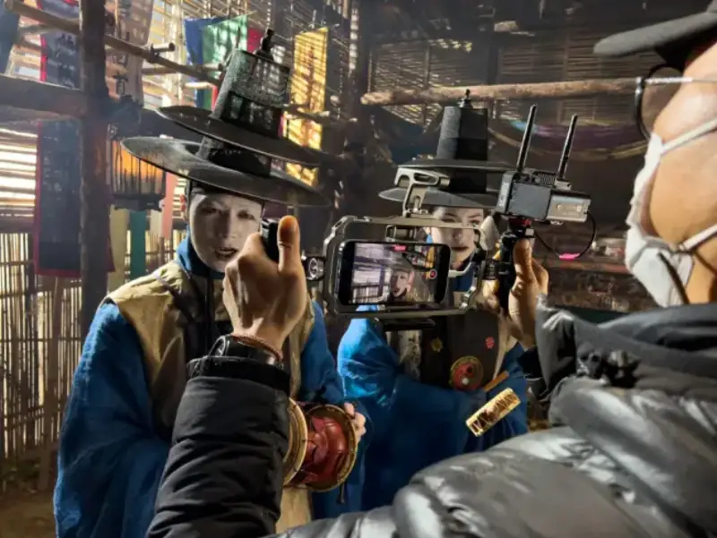

Published: 2023-12-20
Source link: https://www.cnphotos.net/academy/show-162.html
At every critical moment, you need an indispensable steady hand.
In the exact broadcast of news, stability and speed often decide success or failure. This was shown again in The Queen of News, the TVB drama that has recently swept the country.

The Queen of News is set in the news industry. Its many scenes of news gathering and its gripping plot made it a rare hit in recent years. The show also benefited from its real settings. The SmallRig AD-01 heavy hydraulic tripod, which several times helped the news queens gather and shoot on the scene, has again become a hot topic. Many journalists and photography fans call it the steady hand.
SmallRig was founded in 2013. It is a core brand of Leqi SmallRig, a leading global maker of image-equipment ecosystems. SmallRig covers five product lines: camera support and stabilization, smartphone support and stabilization, lighting and control systems, power banks, and all-in-one live-streaming solutions. It has more than 700 individual products. They are widely used in live streaming, vlogs, short videos, news interviews, documentaries, and Hollywood feature films. Its users span more than 150 countries and regions, and its sales and market share lead the world.

In The Queen of News, SmallRig professional image products, led by the AD-01 heavy hydraulic tripod, appear many times at news interviews. It is more than a prop. It is an extension of the real work on the news scene. In the reports by the SNK organization, the AD-01 is vital both for quick setup at breaking news and for steady shooting in complex conditions. It greatly raises the quality and effect of the news coverage.
On a real news scene, every precise camera angle and steady frame matters. The AD-01 heavy hydraulic tripod is an essential partner for news gathering and filmmaking. It offers flexible adjustment and high stability. With a wide height range, smooth 360-degree rotation, and a load capacity of up to 8 kg, it lets shooters set up fast and gives solid, stable support in changing news conditions. It captures every key moment and adds reliable backup to fast-paced news production.
Beyond The Queen of News, SmallRig products are widely used in many other well-known international films and shows, thanks to their professionalism and reliability. Whether it is Park Chan-wook's lyrical work, the tense American series Only Murders in the Building, or Christopher Nolan's large production Tenet, SmallRig's image-grade accessories are the quiet support behind the memorable shots.

As a leading company in the global image-equipment field, Leqi SmallRig works to give customers around the world ecosystem products and solutions for every image scenario. Its products now sell in more than 150 countries and regions. By adding power to the camera, it raises image quality and gives users a more professional, rich, easy, and efficient image experience.
In the future, Leqi SmallRig will keep using innovation to launch more high-quality image products and solutions. It will also deepen its work with partners such as Canon, Sony, and Nikon, to bring users around the world an even better image experience.